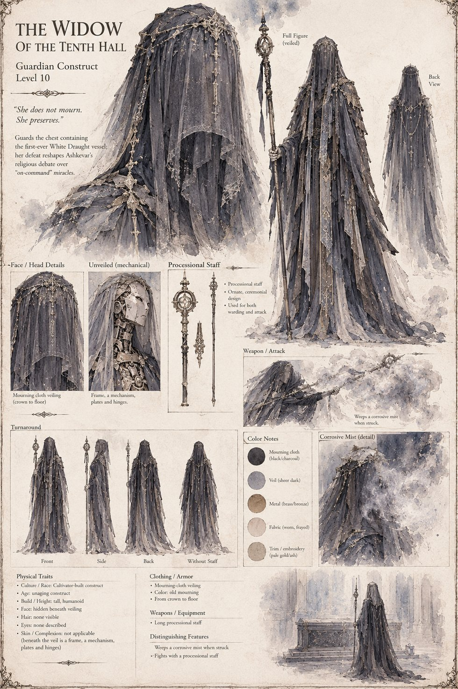

The Widow of the Tenth Hall
Guardian Construct · Level 10
Veiled crown to floor in cloth the color of old mourning, fighting with a processional staff and weeping a fine corrosive mist whenever she's struck — a mist that ate leather before it ate skin. Shira's party takes the better part of two hours and the ruin of one man's sword-arm to bring the veil apart, revealing nothing underneath but a frame, a mechanism, plates and hinges. She guards the chest holding the first-ever White Draught vessel, and her defeat reshapes Ashkevar's whole religious debate over miracles that arrive on command.
“She does not mourn. She preserves.”
Appears In

Related Records

The Widow of the Tenth Hall, unveiled.